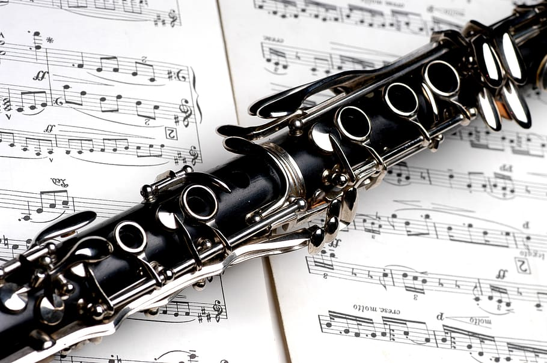
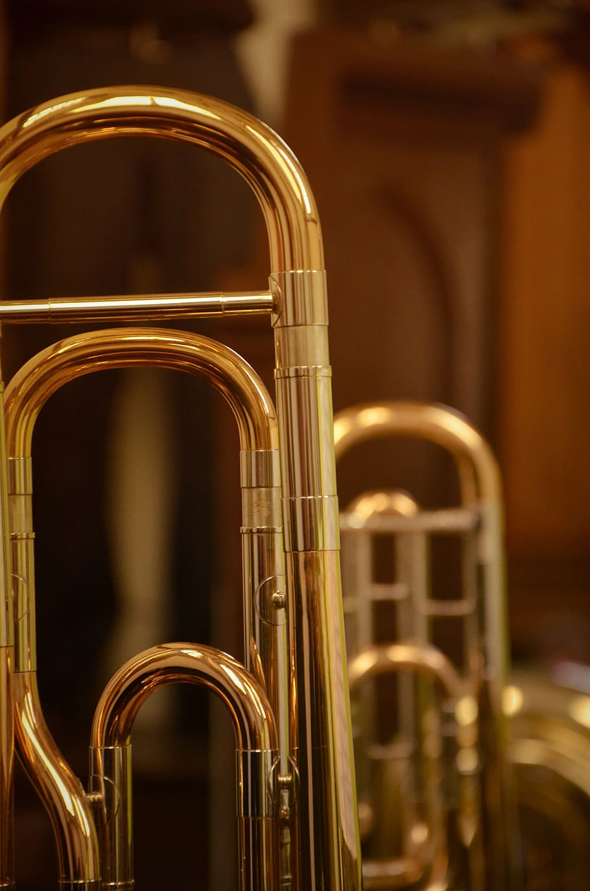

Música por músicos
Home
Inicio
Boletín
Final
Cuerda
Percusión
Viento
Los instrumentos de viento o aerófonos son una familia de instrumentos musicales los cuales producen el sonido por la vibración del contenido de aire en su interior, sin necesidad de cuerdas o membranas porque solo requiere de la vibración del aire. De esta forma el músico produce una pequeña vibración con soplando, cuya amplificación será diferente dependiendo del instrumento en cuestión. Dependiendo de dicha amplificación y caracteristicas basicas, podemos clasificar los instrumentos de varias maneras:
Tipos de instrumentos de viento
Timbre
Sistema de sonido
Fabricación
Viento madera
Suave y melodioso
Caña de lengüeta
Madera
Viento metal
Fuerte y brillante
Boquilla
Metal
Los instrumentos de viento madera son aquellos cuyo cuerpo está hecho de Madera principalmente. El sonido en su caso se consigue mediante una lengüeta que tambien es de madera. Dicho sonido es caracterizado por ser más melodioso.


Los instrumentos de viento madera son aquellos cuyo cuerpo está hecho de Madera principalmente. El sonido en su caso se consigue mediante una lengüeta que tambien es de madera. Dicho sonido es caracterizado por ser más melodioso.